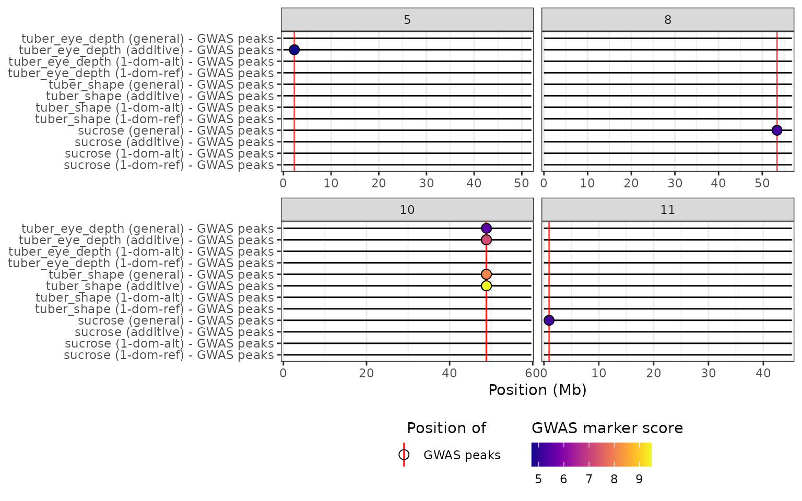
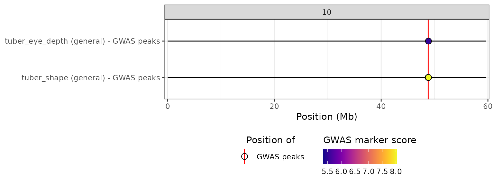

The GWASpoly package is designed to perform GWAS analyses for autopolyploid organisms. It allows the simultaneous analysis of several traits or phenotypes, and can compute markers association scores with different genetic models. The package also includes a function to compute the significance threshold for each trait and genetic model.
The hidecan package provides functions to generate a
HIDECAN plot directly from a GWASpoly output object (object
of class GWASpoly.thresh obtained with the
GWASpoly::set.threshold()).
GWASpoly example data
An example of GWASpoly output, based on the original
example dataset from the GWASpoly package, can be obtained with the
get_gwaspoly_example_data() function:
gwaspoly_output <- get_gwaspoly_example_data()
class(gwaspoly_output)
#> [1] "GWASpoly.thresh"
#> attr(,"package")
#> [1] "GWASpoly"In this example, three traits were analysed:
tuber_eye_depth, tuber_shape and
sucrose. For each trait, GWAS scores were computed with
four different genetic models: general,
additive, 1-dom-alt and
1-dom-ref:
## Traits analysed
names(gwaspoly_output@scores)
#> [1] "tuber_eye_depth" "tuber_shape" "sucrose"
## Genetic models tests
head(gwaspoly_output@scores[[1]])
#> general additive 1-dom-alt 1-dom-ref
#> c2_41437 0.45584445 0.4774282 0.1430731 NA
#> c2_24258 0.32552500 0.1655215 NA 0.0431065
#> c2_21332 0.06251865 0.2263273 0.1562208 0.4488712
#> c2_21320 0.92927679 0.5774697 NA 1.0170807
#> c2_21318 0.09043940 0.2200563 0.1410284 NA
#> c2_21314 0.19480464 0.6442068 NA 0.4286548See the Appendix section at the bottom of this vignette for the code used to generate this example data.
HIDECAN plot from GWASpoly output
The hidecan_plot_from_gwaspoly() function reads in a
GWASpoly.thresh object, extracts from it the marker scores
for each combination of trait and genetic model, and uses them to
construct a HIDECAN plot. In the y-axis, the trait is indicated first,
and the genetic model next in brackets:
hidecan_plot_from_gwaspoly(
gwaspoly_output,
remove_empty_chrom = TRUE
)
From the HIDECAN plot, we can easily see that there is a genomic region around 50Mb on chromosome 10 that is significantly associated with both tuber eye depth and shape, when using either the general or additive model. This region is not significantly associated with either of these traits when considering one of the simplex dominant models. For the sucrose phenotype, only the general model detected any significant markers.
It is possible to specify which traits and/or genetic models are
represented in the HIDECAN plot, via the traits and
models arguments:
hidecan_plot_from_gwaspoly(
gwaspoly_output,
traits = c("tuber_eye_depth", "tuber_shape"),
models = "general",
remove_empty_chrom = TRUE
)
The GWASpoly constructor
Under the hood, the hidecan_plot_from_gwaspoly()
function relies on the GWAS_data_from_gwaspoly()
constructor, which takes as an input either:
a
GWASpoly.fittedobject (returned by theGWASpoly::GWASpoly()function), ora
GWASpoly.threshobject (returned by theGWASpoly::set.threshold()function).
The function extracts the marker scores for all traits and genetic
models present in the GWASpoly output, as well as the length of all
chromosomes. In addition, if the input data is a
GWASpoly.thresh object, it extracts the significance
threshold for each combination of trait and genetic model, and uses it
to filter significant markers.
gwaspoly_data <- GWAS_data_from_gwaspoly(gwaspoly_output)
## GWAS_data objects, i.e. tibbles of marker scores
str(gwaspoly_data$gwas_data_list, max.level = 1)
#> List of 12
#> $ tuber_eye_depth (general) : GWAS_dat [3,507 × 4] (S3: GWAS_data/tbl_df/tbl/data.frame)
#> $ tuber_eye_depth (additive) : GWAS_dat [3,507 × 4] (S3: GWAS_data/tbl_df/tbl/data.frame)
#> $ tuber_eye_depth (1-dom-alt): GWAS_dat [2,054 × 4] (S3: GWAS_data/tbl_df/tbl/data.frame)
#> $ tuber_eye_depth (1-dom-ref): GWAS_dat [2,174 × 4] (S3: GWAS_data/tbl_df/tbl/data.frame)
#> $ tuber_shape (general) : GWAS_dat [3,507 × 4] (S3: GWAS_data/tbl_df/tbl/data.frame)
#> $ tuber_shape (additive) : GWAS_dat [3,507 × 4] (S3: GWAS_data/tbl_df/tbl/data.frame)
#> $ tuber_shape (1-dom-alt) : GWAS_dat [2,054 × 4] (S3: GWAS_data/tbl_df/tbl/data.frame)
#> $ tuber_shape (1-dom-ref) : GWAS_dat [2,174 × 4] (S3: GWAS_data/tbl_df/tbl/data.frame)
#> $ sucrose (general) : GWAS_dat [3,506 × 4] (S3: GWAS_data/tbl_df/tbl/data.frame)
#> $ sucrose (additive) : GWAS_dat [3,507 × 4] (S3: GWAS_data/tbl_df/tbl/data.frame)
#> $ sucrose (1-dom-alt) : GWAS_dat [2,054 × 4] (S3: GWAS_data/tbl_df/tbl/data.frame)
#> $ sucrose (1-dom-ref) : GWAS_dat [2,174 × 4] (S3: GWAS_data/tbl_df/tbl/data.frame)
## GWAS_data_thr objects, i.e. tibbles of significant markers
str(gwaspoly_data$gwas_data_thr_list, max.level = 1)
#> List of 12
#> $ tuber_eye_depth (general) : GWAS_dt_ [1 × 4] (S3: GWAS_data_thr/tbl_df/tbl/data.frame)
#> $ tuber_eye_depth (additive) : GWAS_dt_ [3 × 4] (S3: GWAS_data_thr/tbl_df/tbl/data.frame)
#> $ tuber_eye_depth (1-dom-alt): GWAS_dt_ [0 × 4] (S3: GWAS_data_thr/tbl_df/tbl/data.frame)
#> $ tuber_eye_depth (1-dom-ref): GWAS_dt_ [0 × 4] (S3: GWAS_data_thr/tbl_df/tbl/data.frame)
#> $ tuber_shape (general) : GWAS_dt_ [2 × 4] (S3: GWAS_data_thr/tbl_df/tbl/data.frame)
#> $ tuber_shape (additive) : GWAS_dt_ [2 × 4] (S3: GWAS_data_thr/tbl_df/tbl/data.frame)
#> $ tuber_shape (1-dom-alt) : GWAS_dt_ [0 × 4] (S3: GWAS_data_thr/tbl_df/tbl/data.frame)
#> $ tuber_shape (1-dom-ref) : GWAS_dt_ [0 × 4] (S3: GWAS_data_thr/tbl_df/tbl/data.frame)
#> $ sucrose (general) : GWAS_dt_ [2 × 4] (S3: GWAS_data_thr/tbl_df/tbl/data.frame)
#> $ sucrose (additive) : GWAS_dt_ [0 × 4] (S3: GWAS_data_thr/tbl_df/tbl/data.frame)
#> $ sucrose (1-dom-alt) : GWAS_dt_ [0 × 4] (S3: GWAS_data_thr/tbl_df/tbl/data.frame)
#> $ sucrose (1-dom-ref) : GWAS_dt_ [0 × 4] (S3: GWAS_data_thr/tbl_df/tbl/data.frame)
## Chromosomes length
str(gwaspoly_data$chrom_length)
#> tibble [13 × 2] (S3: tbl_df/tbl/data.frame)
#> $ chromosome: Ord.factor w/ 13 levels "0"<"1"<"2"<"3"<..: 1 2 3 4 5 6 7 8 9 10 ...
#> $ length : int [1:13] 36454137 88583876 48564909 61870684 72026885 51998374 59263222 56628128 56785385 61466245 ...Appendix: reproducing the GWASpoly example data
The example dataset provided through
get_gwaspoly_example_data() can be reproduced with the
following code:
library(GWASpoly)
genofile <- system.file("extdata", "TableS1.csv", package = "GWASpoly")
phenofile <- system.file("extdata", "TableS2.csv", package = "GWASpoly")
## Reading example data
data <- read.GWASpoly(
ploidy = 4,
pheno.file = phenofile,
geno.file = genofile,
format = "ACGT",
n.traits = 13,
delim = ","
)
## Computing K matrix
data.original <- set.K(
data,
LOCO = FALSE,
n.core = 2
)
## Performing GWAS
gwaspoly_res <- GWASpoly(
data.original,
models = c("general", "additive", "1-dom"),
traits = c("tuber_eye_depth", "tuber_shape", "sucrose"),
n.core = 2
)
## Computing significance threshold
## Object returned by get_gwaspoly_example_data()
gwaspoly_res_thr <- set.threshold(
gwaspoly_res,
method = "M.eff",
level = 0.05
)